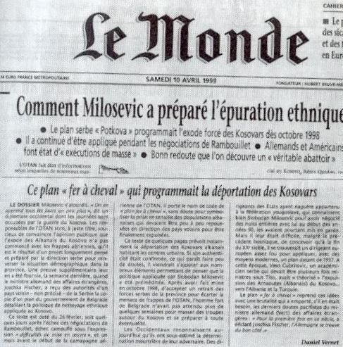

L’OTAN : artisane de paix ou fautrice de troubles et de chaos ? (1ère partie)
par Dominique DELAWARDE
Le 4 avril 1949, le traité de l'Atlantique Nord est signé entre douze états nord-américains et ouest-européens.
Pendant 41 ans, de 1949 à 1990, et jusqu'à l'effondrement de l'Union Soviétique, aucune bombe de l'OTAN ne viendra perturber la quiétude de l'Europe occidentale et celle de la planète.
A l'inverse, de 1991 à 2019, pendant 28 ans, les bombes otaniennes ont commencé à pleuvoir de plus en plus fréquemment et de plus en plus nombreuses tant en Europe que hors d’Europe : Quelques centaines au début, puis quelques milliers, pour en arriver aujourd'hui à plusieurs dizaines de milliers de bombes larguées chaque année sur la planète par des pays membres de l’OTAN, agissant en coalition de circonstance.
Les prétextes évoqués pour ces bombardements ont été et sont, le plus souvent, fallacieux, voire créés de toute pièce. Ces bombardements relèvent, presque toujours de l'ingérence intéressée, nous le verrons plus loin. Droits de l'homme, démocratie, ingérence humanitaire, sécurité nationale, sont généralement des justificatifs mis en avant depuis 1991, alors qu'ils ne l'étaient pas avant. L’Europe, l'Afrique, l'Asie ont déjà été concernées par ces bombardements effectués par des coalitions de membres de l'OTAN, voire par l'OTAN elle-même. L'ONU est souvent ignorée, contournée. Les résolutions du conseil de sécurité sont parfois outrepassées.
Les questions qui se posent sont de savoir comment et pourquoi on en est arrivé là et peut-être surtout, quelles sont les perspectives d'avenir ?
*
Première période 1949-1990 : l'OTAN, artisan de paix
Le texte du traité de l'Atlantique Nord conclu entre les douze cofondateurs de l’Alliance est court : 14 articles, 500 mots.
Deux des quatorze articles du traité de 1949 me paraissent refléter son caractère pacifique et respectueux de la légalité internationale incarnée par l'ONU. Je vous en laisse prendre connaissance.
Article 1 : Les parties s'engagent, ainsi qu'il est stipulé dans la Charte des Nations Unies, à régler par des moyens pacifiques tous différends internationaux dans lesquels elles pourraient être impliquées, de telle manière que la paix et la sécurité internationales, ainsi que la justice, ne soient pas mises en danger, et à s'abstenir dans leurs relations internationales de recourir à la menace ou à l'emploi de la force de toute manière incompatible avec les buts des Nations Unies.
Article 5 : Les parties conviennent qu'une attaque armée contre l'une ou plusieurs d'entre elles survenant en Europe ou en Amérique du Nord sera considérée comme une attaque dirigée contre toutes les parties, et en conséquence elles conviennent que, si une telle attaque se produit, chacune d'elles, dans l'exercice du droit de légitime défense, individuelle ou collective, reconnu par l'article 51 de la Charte des Nations Unies, assistera la partie ou les parties ainsi attaquées en prenant aussitôt, individuellement et d'accord avec les autres parties, telle action qu'elle jugera nécessaire, y compris l'emploi de la force armée, pour rétablir et assurer la sécurité dans la région de l'Atlantique Nord.
Berlin, 1961
Toute attaque armée de cette nature et toute mesure prise en conséquence seront immédiatement portées à la connaissance du Conseil de Sécurité. Ces mesures prendront fin quand le Conseil de Sécurité aura pris les mesures nécessaires pour rétablir et maintenir la paix et la sécurité internationales.
Chacun peut le constater lui-même, le texte de ce traité est inattaquable Les références au cadre de l'ONU sont omniprésentes. Cette alliance est une alliance défensive qui ne prévoit d'agir qu'en légitime défense. Elle ne s'applique qu'aux seuls territoires des états membres de l'Alliance.
Au cours de la période 1949-1991, l'Alliance n'a que peu évoluée dans sa structure. Quatre pays sont venus la rejoindre (Grèce, Turquie, Allemagne de l'Ouest et Espagne) portant de 12 à 16 le nombre de ses membres. La France a quitté l'organisation militaire intégrée en 1966 sans pour autant se retirer de l'alliance. De l'aveu même des américains, ce retrait de la France de l'organisation militaire intégrée lui a donné « une position particulière qui lui a valu une influence internationale plus importante que celle de n’importe quel autre pays européen ».
Comme une loi voit ses modalités de mise en œuvre précisées par un décret d'application, le Traité de l'Atlantique Nord voit ses modalités et son cadre d'application précisées par un document nommé « Concept Stratégique ». De 1949 à 1990, ce document est classifié « NATO Cosmic Top Secret ». Il est rédigé par des militaires qui n'aiment pas les guerres inutiles et s'en tiennent à l'esprit du traité de 1949. Il est approuvé par des politiques et réactualisé tous les dix ans.
Le résultat de cet OTAN 1 « défensif et dissuasif » est clair : Pas la moindre bombe larguée en 41 ans en Europe. La dissuasion et son « équilibre de la terreur » ont joué leur rôle. La paix a régné sur l'Atlantique Nord.
Vous noterez avec moi que l'OTAN dont on a toujours dit qu'elle s'opposait au Pacte de Varsovie a été créée plus de 6 ans avant cette alliance militaire des pays de l'Est de l'Europe. De là à penser, non sans raisons calendaires, que le pacte de Varsovie a été créé le 14 mai 1955 « en réaction » à la création de l'OTAN et à son élargissement le 6 mai 1955 à l'Allemagne de l'Ouest, il n'y a qu'un pas que certains observateurs de bonne foi peuvent franchir.
Par ailleurs, lorsqu'on apprend par des documents officiels US déclassifiés que la création de l'Union Européenne a été initiée par des hommes politiques européens qui émargeaient, à titre personnel, à des organismes officiels US (CIA, Département d’État), lire à cet égard le livre enquête très factuel de Philippe de Villier (J'ai tiré sur le fil du mensonge et tout est venu), on peut se demander si ces hommes d'état européens, Jean Monnet et Robert Schuman pour la France en 1949, et Walter Hallstein pour l'Allemagne en 1954, n'ont pas joué également un rôle moteur dans la création et l'extension de l'OTAN au profit de leur commanditaire: les USA . C'est bien Robert Schuman qui va signer ce traité au nom de la France ....
L'OTAN a-t-elle été créée en 1949, 4 ans après la fin de la 2ème Guerre mondiale uniquement pour faire face à la menace soviétique qui existait pourtant depuis 1945 ? Ou l'OTAN a-t-elle été créée concomitamment avec l'UE pour servir une vision ou des intérêts américains de long terme en Europe ? Ce sont des questions auxquelles il sera plus facile de répondre demain lorsque d'autres archives déclassifiées parleront.
*
En novembre 1989, c'est la chute du mur de Berlin. L'effondrement de l'Union Soviétique est d'abord économique, son PIB tombe au niveau de celui des Pays-Bas. Chacun réalise que, sans un niveau de puissance économique suffisant, la puissance militaire va évidemment s'évaporer rapidement. Le pacte de Varsovie est dissout le 1er juillet 1991. Les pays de l'est, satellites de l'Union Soviétique, reprennent donc leur autonomie.
D'août à octobre 1991 les quinze républiques de l'ex-URSS font sécession et proclament leur indépendance. La dislocation de l'URSS sera définitivement actée en décembre 1991.
Un tel bouleversement géostratégique signifie une quasi disparition de la menace telle qu'elle existait encore en novembre 1989. Que va faire l'OTAN ? Va-t-elle se dissoudre en geste d'apaisement alors que la menace qui justifiait son existence a disparu ? Va-t-elle, au contraire, tenter de tirer parti de l'opportunité qui lui est offerte pour essayer d'imposer une hégémonie militaire totale, indiscutable, sans partage et durable sur l'ensemble de la planète, au seul profit de ses membres et surtout du premier d'entre eux : les USA ?
C'est la deuxième solution qui va être choisie.
*
De 1991 à 2019, les dérives de l'OTAN
En 1989, les néoconservateurs américains qui se sont infiltrés progressivement dans les cercles du pouvoir US depuis la présidence Reagan, avec l'aide de certains lobbies, bénéficient déjà d'un pouvoir d'influence considérable.
Le mouvement néoconservateur américain prône une hégémonie totale et sans partage de l'hyperpuissance US sur le monde. Il méprise les institutions internationales qu'il ne maîtrise pas complètement et, en particulier, l'ONU.
« Nous avons 5 à 10 ans pour nettoyer tous les régimes dévoués à l'ex-Union Soviétique avant qu'une nouvelle superpuissance n'émerge pour nous défier ».
Un homme va jouer un rôle considérable, en coulisse, dans la transformation de l'OTAN en outil offensif au service des intérêts et de l'hégémonie US. Il s'agit de Paul Wolfowitz. De 1989 à1993, sous la direction de Dick Cheney, il est sous-secrétaire à la Défense chargé de la planification, où il élabore une nouvelle définition de la stratégie et de l'organisation de la force militaire américaine après la fin de la guerre froide. Il est alors numéro 3 du Pentagone à 48 ans. Dans une conversation de 1991 avec le général Clark, futur commandant en chef de l'OTAN, il déclare : « Nous avons 5 à 10 ans pour nettoyer tous les régimes dévoués à l'ex-Union Soviétique avant qu'une nouvelle superpuissance n'émerge pour nous défier ».
La révision du traité de l'Atlantique Nord serait trop longue et compliquée. En revanche, il est beaucoup plus facile et rapide de réactualiser le « Concept Stratégique » que j'ai qualifié de « décret d'application ».
Cette réactualisation va être mise en chantier dès la fin de 1990, alors même que l'effondrement de l'Union soviétique est en cours. Wolfowitz et ceux qui inspirent et/ou préparent le nouveau Concept stratégique de l'OTAN vont être servis par les circonstances.
En réaction à l'invasion du Koweït en août 1990, les USA mettent sur pied une coalition de 35 états qui interviennent en janvier-février 1991 contre l'armée de Saddam Hussein. Tous les états membres de l'OTAN, à l'exception du Luxembourg et de l'Islande qui n'ont pas d'armée, participent à cette 1ère guerre du Golfe de 1991.
Plusieurs autres membres de cette coalition deviendront d'ailleurs membres de l'OTAN dans les années qui suivent. Certes, il ne s'agit pas d'une opération menée au nom de l'OTAN. Mais l'empreinte otanienne y est très forte, en tout cas aux yeux du monde et des Irakiens. Deux observations méritent d'être faites sur la conduite de cette campagne militaire qui influencera les suivantes.
La première concerne la technique des bombardements stratégiques qui privilégie la destruction des infrastructures matérielles civiles à celles des forces armées de l'adversaire en application de la théorie des cinq cercles. Cette technique qui pose évidemment un problème moral est efficace et entraîne peu de victimes collatérales directes.
En revanche, le nombre de victimes indirectes, à moyen et long termes, est très important. En effet, cette campagne de bombardements a anéanti la plupart des infrastructures nécessaires à la survie de la société (eau, électricité, hôpitaux, etc.).
Associés aux sanctions d'après-guerre qui ont empêché la reconstruction du pays, ces bombardements stratégiques de l'OTAN auront entraîné la mort de plusieurs centaines de milliers de civils après les opérations militaires. 88 000 tonnes de bombes auront été larguées en 43 jours : presque autant que pendant toute l'année 1943 de la 2ème Guerre mondiale... En outre, l'utilisation de l'uranium appauvri par la coalition a eu des conséquences sanitaires non négligeables sur la population civile irakienne et sur les soldats des deux camps exposés à ses effets.
La deuxième observation concerne l'instrumentalisation d'opposants irakiens lors de la campagne. Pour faciliter leurs opérations et affaiblir l'adversaire, la coalition a poussé les Kurdes et les Chiites irakiens à se révolter contre le gouvernement irakien. Ces alliés de circonstance seront abandonnés par la coalition après le cessez le feu du 28 février 1991. Ils seront massacrés par Saddam au printemps 1991.
C'est dans ce contexte d'une OTAN triomphante, tant dans la guerre froide en Europe, que dans la guerre chaude du Golfe que se termine la première réactualisation post-guerre froide du concept stratégique de l'OTAN.
*
1ère réactualisation post-guerre froide du concept stratégique de l'OTAN
Cette réactualisation est adoptée le 7 Novembre 1991. Ce nouveau concept stratégique est un texte qui n'est plus rédigé par les militaires mais par les politiques. En l'absence de réelle menace militaire, ceux-ci tiennent désormais le haut du pavé. Le texte est très long : 7400 mots. La référence aux Nations Unies n'apparaît qu'une seule fois dans l'article 34.
Que dire de ce texte ? Sans entrer dans les détails, il élargit considérablement et sans surprise le spectre des menaces et les zones géographiques concernées. L'une de ses parties est même intitulée : « Une conception large de la sécurité ». Il ouvre donc la porte à l'ingérence en multipliant les prétextes possibles. La zone d'intérêt n'est plus seulement l'Atlantique Nord et l'Europe occidentale. Elle s'élargit désormais à l'Europe centrale et à l'Europe de l'Est ainsi qu'aux Proche et Moyen-orients et à l'Afrique du Nord.
Le texte de 1991 a une deuxième caractéristique essentielle. Il ouvre la porte à l'élargissement de l'OTAN à l'Est et à la modification profonde des grands équilibres géostratégiques qui ont prévalu entre 1945 et 1990 et qui, quoiqu'on en dise, nous ont apporté 45 ans de paix en Europe.
Ce texte de 1991 va devenir la référence comportementale de l'OTAN entre novembre1991 et avril 1999. Qu'avons-nous constaté entre ces deux dates ?
1 – D'abord une première extension de l'OTAN à l'Est, en contradiction formelle avec les promesses faites par les Américains aux Russes en février 1990. A noter que ces promesses avaient été réitérées par Helmut Kohl et François Mitterrand en février de la même année.
Ainsi l'Allemagne de l'Est en 1990, puis la République tchèque, la Hongrie et la Pologne en mars1999 ont rejoint l'OTAN portant de 16 à 19 le nombre de ses membres.
2 – La superbe opération états-unienne, puis otanienne de démembrement de la Yougoslavie, avec les premières bombes de l'OTAN qui ont commencé à pleuvoir sur l'Europe. Premières bombes depuis la fin de la Deuxième Guerre mondiale.
Cette opération est, en fait, très mal connue par l'opinion publique européenne qui s'est contentée de suivre le feuilleton très « romancé » par les médias mainstream de leur pays.
Il faut donc s'y arrêter quelques instants car elle a eu des conséquences considérables. Elle explique, pour une large part, les dérives de l'Alliance atlantique qui ont suivi et la situation géopolitique que nous connaissons aujourd'hui.
C'est un sujet que je connais bien, pour avoir servi deux fois dans les Balkans dans le cadre de l'ONU (automne-hiver 1994-1995) puis de l'OTAN (2000), pour avoir préparé avec l'état-major US, au Pentagone, fin 1995, le déploiement de l'OTAN en Bosnie et pour avoir suivi au première loge l'avant, le pendant et l'après bombardement de la Serbie en 1998, 1999, 2000.
Le 5 novembre 1990, alors que les pays de l'est sont en situation de quasi faillite, le Congrès US adopte une loi sur l'octroi de moyens financiers à l'étranger (Foreign Operations Appropriations Law 101-513) décidant que tout soutien financier à la Yougoslavie serait suspendu dans les 6 mois, sans possibilité d'emprunt ou de crédit. Cette loi exige que des élections soient conduites séparément dans chacune des six républiques yougoslaves. Les résultats de ces élections devaient être présentés à Washington. Ce n'est qu'une fois cette condition remplie qu'on accepterait d'octroyer une aide financière séparée aux différentes républiques qui auraient bien voté.
Cette procédure délibérée était évidemment dangereuse au point que, déjà le 27 novembre 1990, le New York Time citait un rapport de la CIA prédisant, avec justesse, qu'une guerre civile sanglante éclaterait en Yougoslavie.
Mises sous pression financière massive par la loi US, incapables de rembourser les dettes contractées envers l'Occident, les républiques yougoslaves n'ont pas tardé à se disputer. Les républiques les plus riches de Croatie et de Slovénie, estimant qu'elles contribuaient davantage à l'économie, ont demandé une part plus large des maigres ressources financières qui restaient. Les 4 autres républiques, plus pauvres, réclamaient davantage de moyens au titre du rééquilibrage, afin de garantir la cohésion de la Yougoslavie.
Le résultat de cette pression financière US était logique et prévisible. Le 25 juin 1991, la Croatie et la Slovénie déclaraient simultanément leur indépendance. Le démembrement de la Yougoslavie, et la guerre civile meurtrière qui ont suivi démarraient, réjouissant à n'en pas douter ceux qui les avaient planifiés, dont notre bon néoconservateur US Wolfowitz, chef « Plan-Stratégie post guerre froide » au Pentagone ...
C'est le 25 mai 1995 que les premières bombes de l'OTAN tombent sur les positions bosno-serbes autour de Sarajevo. Aucun pays de l'Alliance n'est pourtant agressé et, en frappant, l'OTAN renonce au principe défensif et devient partie prenante offensive dans une guerre civile bosniaque qui n'implique aucun des membres de l'OTAN.
En novembre 1995, les accords de Dayton mettent un terme à la guerre de Bosnie dont on pourra parler plus en détail au moment des questions notamment sur l'affaire de Srebrenica de juillet 1995.
Le démantèlement programmé de l'ex-Yougoslavie est quasiment terminé. Pour réduire à néant ce qui reste de l'ex-Yougoslavie, c'est à dire la Serbie, il ne reste plus qu'à en détacher le Kosovo. Cette opération va suivre immédiatement les accords de Dayton. Elle a été également planifiée de longue date.
De la position d'observateur privilégié qui était la mienne, j'ai pu suivre au jour le jour l'ampleur des mensonges souvent délirants de l'OTAN, relayés par les médias, avant, pendant et après cette opération de 78 jours du 23 mars au 10 juin 1999.
Ces mensonges restent ignorés du grand public mais sont aujourd'hui reconnus jusque dans les médias mainstream.
Dans un article d'avril 2019, Serge Halimi, directeur du journal « Le Monde Diplomatique » et Pierre Rimbert, rédacteur en chef adjoint de ce même journal co-signent un excellent article sous le titre : le plus gros bobard du XXème siècle.
Ils écrivent : « Il y a vingt ans, le 24 mars 1999, treize États membres de l’Organisation du traité de l’Atlantique nord (OTAN), dont les États-Unis, la France et l’Allemagne, bombardaient la République fédérale de Yougoslavie. Cette guerre dura soixante-dix-huit jours et se nourrit de bobards médiatiques destinés à aligner l’opinion des populations occidentales sur celle des états-majors. Les Serbes commettent un « génocide », « jouent au football avec des têtes coupées, dépècent des cadavres, arrachent les fœtus des femmes enceintes tuées et les font griller », prétendit le ministre de la défense allemand, le social-démocrate Rudolf Scharping, dont les propos furent repris par les médias ; ils ont tué « de 100 000 à 500 000 personnes » (TF1, 20 avril 1999), incinéré leurs victimes dans des « fourneaux, du genre de ceux utilisés à Auschwitz » (The Daily Mirror, 7 juillet).
Une à une, ces fausses informations seront taillées en pièces — mais après la fin du conflit—, notamment par l’enquête du journaliste américain Daniel Pearl (The Wall Street Journal, 31 décembre 1999). Tout comme se dégonflera l’une des plus retentissantes manipulations de la fin du XXe siècle : le plan Potkova (« fer à cheval »), un document censé prouver que les Serbes avaient programmé l’« épuration ethnique» du Kosovo. Sa diffusion par l’Allemagne, en avril 1999, servit de prétexte à l’intensification des bombardements.
Loin d’être des internautes paranoïaques, les principaux désinformateurs furent les gouvernements occidentaux, l’OTAN, ainsi que les organes de presse les plus respectés. »
Ce qu'il faut retenir de cette presque décennie 1991-1999, c'est que l'OTAN, sous l'influence incontestable des néoconservateurs US, est passée à l'offensive en profitant de l'état de faiblesse de la Russie et de la Chine.
Elle est parvenue à démembrer la Yougoslavie en utilisant d'abord l'arme économique et financière pour mettre la pression et initier la division des républiques yougoslaves, en soutenant les parties sécessionnistes puis en pratiquant une guerre de l'information très efficace à base de mensonges et de prétextes fabriqués et enfin en utilisant une force militaire disproportionnée et aveugle, agissant du fort au faible, à 13 contre 1. La technique des bombardements stratégiques en application de la théorie des 5 cercles, privilégiant les cibles de l'infrastructure civile, ont compromis durablement l'avenir de la Serbie.
Cela s'est produit dans l'indifférence totale des opinions publiques occidentales anesthésiées par les manipulations médiatiques.
L'OTAN est donc sortie de son rôle, elle est sortie de l'esprit et de la lettre du traité d'Alliance de 1949, notamment de ses articles 1 et 5, elle est sortie de la légalité internationale en s'affranchissant du feu vert de l'ONU. Elle a dégradé son image pour longtemps.
Paradoxalement, alors qu'elle élargit toujours plus son champ d'action, l'OTAN qui ne se sent plus vraiment menacée, désarme à tout-va. La composante européenne de l'OTAN divise ses budgets de défense par deux, ses effectifs et ses matériels majeurs trois. Nombre de ces pays renoncent à la conscription pour passer à une armée professionnelle, croyant, peut-être à tort, y gagner en efficacité et sans bien mesurer le risque pris sur leur cohésion nationale.
Cette évolution de l'OTAN au cours de la période 1991-1999, évolution que l'on peut qualifier de dérive, sera in fine, contre-productive si l'on examine l'histoire des deux décennies suivantes. Elle aura d’énormes conséquences sur l’ensemble des relations internationales.
La Russie et la Chine, trop faibles à l’époque pour réagir efficacement, mais humiliées (la Chine par le bombardement de son ambassade à Belgrade, la Russie par la défaite d’un allié fidèle et le mépris des occidentaux, agissant sans mandat de l’ONU) ont décidés de s’organiser et surtout de se réarmer. Dès le 15 juin 2001, ce sera la création de l’OCS (Organisation de Coopération de Shangaï), avec une coopération économique et militaire visant à assurer la sécurité collective de ses six membres fondateurs.
Cette organisation, créée en réaction à la campagne otanienne du Kosovo, s’est élargie et compte aujourd’hui 8 membres dont 4 puissances nucléaires (Russie, Chine, Inde, Pakistan). Elle prône la multipolarité et la non-ingérence dans les affaires d’états souverains. Elle constitue clairement, bien qu’elle s’en défende, une opposition désormais ferme et puissante aux prétentions hégémoniques de la coalition occidentale.
Fin de la première partie, à suivre dans le prochain de numéro de « Méthode »
Partager cette page